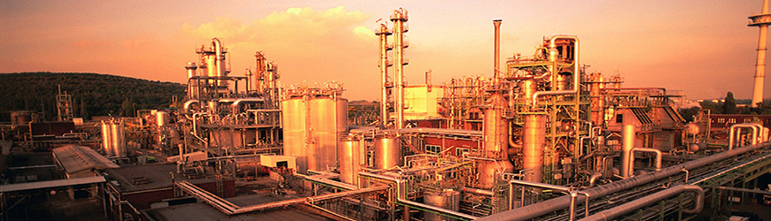

Для обеспечения учета состояния предприятий введен реестр деклараций промышленной безопасности. Госрегулирование направлено на то, чтобы обязать субъектов проводить оценку существующих угроз и информировать о них компетентные органы.
В состав декларации промышленной безопасности включаются:
- Информация о предприятии и процессах, протекающих на нем. Это необходимо для определения масштабов и характера использования вредных и опасных веществ.
- Список мероприятий, направленных на обеспечение нормальных условий функционирования предприятия и контроль отклонений от обычного режима.
- Идентификация типа вероятной аварии, оценка ее возникновения и возможных последствий.
- Инструкция на случай катастрофы
Декларирование осуществляется для регулирования контроля безопасности на промышленных объектах. Компетентные органы проверяют достаточность и эффективность мероприятий, направленных на предупреждение и ликвидацию катастроф на предприятиях. Разработка декларации промышленной безопасности необходима для снижения угроз для населения, сотрудников, предотвращения возникновения аварий. Особенно актуальная она для предприятий, деятельность которых непосредственно связана с вредными веществами и процессами. Экспертиза декларации промышленной безопасности способствует внедрению результативной системы прогнозирования катастроф и безаварийной эксплуатации. Особую значимость мероприятия приобретают в связи с переходом к новым хозяйственным условиям, изменениями форм собственности, снижением государственного регулирования в рыночной экономике.
В документе содержатся результаты:
- Всесторонней и объективной оценки вероятности аварии и угрозы, связанной с ней, для персонала и граждан, находящихся на прилегающей территории.
- Анализа достаточности предпринятых мер предупреждения ЧС и обеспечения готовности предприятия к эксплуатации опасного объекта в соответствии с положениями правил и норм, а также к локализации и устранению последствий катастроф.
- Мероприятия, ориентированные на уменьшение вероятных негативных последствий при аварии.
Согласно указанным выше ФЗ, а также правительственным постановлением, созданы нормативные документы, определяющие требования, в соответствии с которыми предоставляется декларация безопасности опасного промышленного объекта. В этих актах также установлены сроки ее создания, правила оформления, перечень сведений, подлежащих обязательному включению. Нормативными актами определены правила, по которым выполняется экспертиза декларации безопасности промышленного объекта.
Декларация промышленной безопасности оформляется в качестве приложения к проектным документам на строительство, реконструкцию, расширение, техническое переоснащение, ликвидацию или консервацию предприятия. Она также необходима при обращении за получением лицензии на эксплуатацию. Уточнение декларации осуществляется при изменении сведений, присутствующих в ней, или требований безопасности. Пересмотр документа для учета корректировок и дополнений нормативной базы и условий обеспечения защиты предприятия предусмотрен не реже 1 раза в пять лет.
Специалисты Экспертной группы «СКК» окажут Вам помощь в получении стандарта OHSAS 18001 для Вашей организации. Для этого отправьте запрос по почте, позвоните или заполните форму обратной связи.
Узнайте, что нужно для сертификации вашей продукции
Эксперт свяжется с Вами в течение 10 минут